Legacy vignette (for the website / historical notes). These files may not match the current exported API one-to-one. Last verified: 2026-01-18.
For the up-to-date workflow, see the main package vignettes (basic, unconditional, conditional, and causal)..
Unconditional DPmixGPD: CRP Backend with Tail Augmentation
Purpose: Model the bulk of the distribution with a DP mixture (the “kernel” or bulk family) and let a GPD tail capture extreme values beyond a threshold. The CRP backend handles partitioning and we toggle GPD = TRUE to augment the tail.
Data Setup
# Load data with an obvious taildata("nc_pos_tail200_k4", package ="DPmixGPD")y_tail <- nc_pos_tail200_k4$yy_tail <- y_tail[is.finite(y_tail) & y_tail >0]# Summaries and tablesummary_tbl <-tibble(statistic =c("N", "Mean", "SD", "Min", "Max"),value =c(length(y_tail), mean(y_tail), sd(y_tail), min(y_tail), max(y_tail)))df_data <-data.frame(y = y_tail)ggplot(df_data, aes(x = y)) +geom_histogram(aes(y =after_stat(density)), bins =40, fill ="steelblue", color ="black", alpha =0.6) +geom_density(color ="red", linewidth =1) +labs(title ="Raw Data: Mix of Bulk and Tail", x ="y", y ="Density") +theme_minimal()
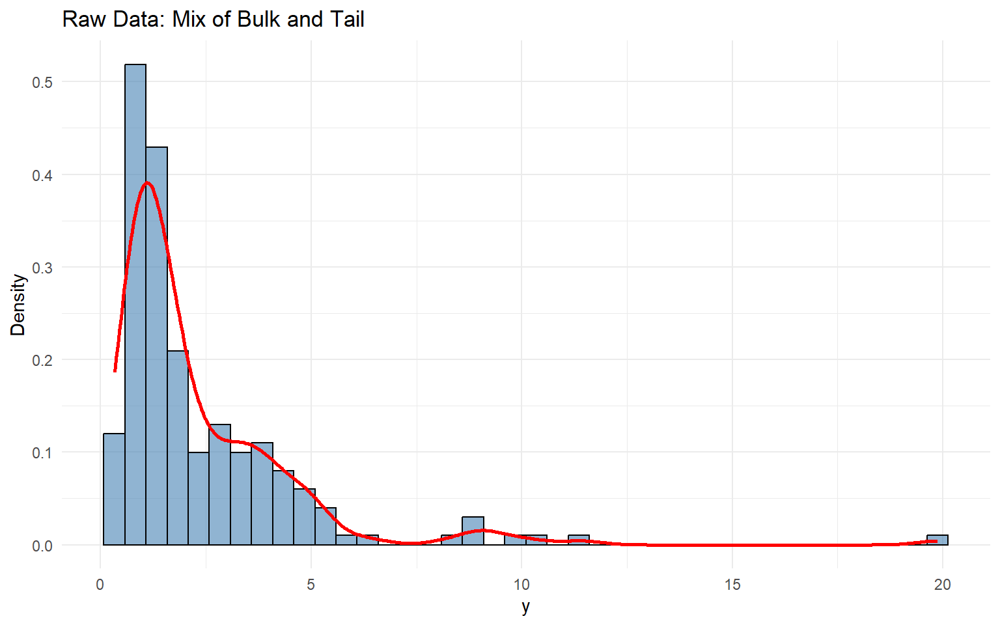
Summary of the Tail Dataset
statistic
value
N
200.000
Mean
2.334
SD
2.300
Min
0.328
Max
19.870
Threshold & Tail Partition
thresholds <-quantile(y_tail, c(0.70, 0.75, 0.80, 0.85, 0.90))u_threshold <- thresholds["80%"]df_tail <-tibble(y = y_tail,region =ifelse(y_tail > u_threshold, "Tail", "Bulk"))ggplot(df_tail, aes(x = y, fill = region)) +geom_histogram(aes(y =after_stat(density)), bins =40, alpha =0.7, color ="black") +geom_vline(xintercept = u_threshold, linetype ="dashed", color ="black") +scale_fill_manual(values =c("Bulk"="steelblue", "Tail"="red")) +labs(title ="Threshold Partition", x ="y", y ="Density") +theme_minimal()
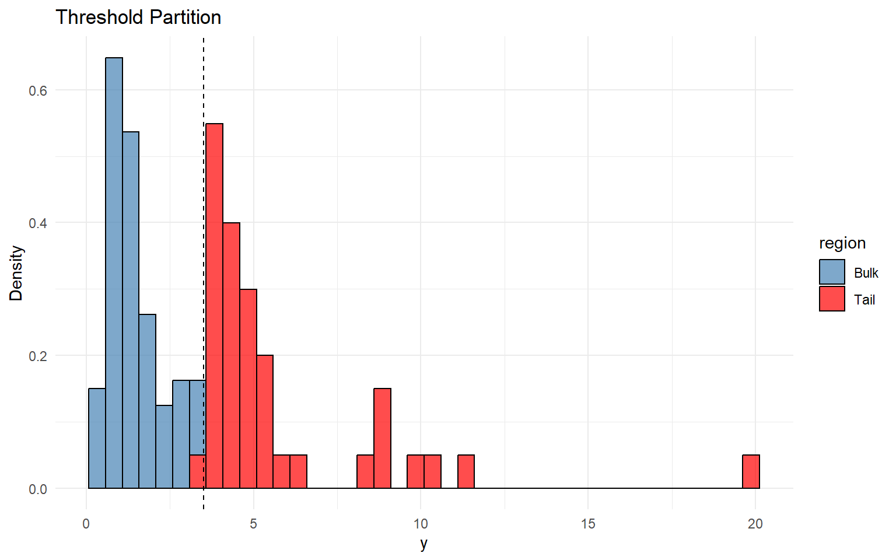
Model Specification & Bundle
This mirrors the direct DPmixGPD::build_nimble_bundle() workflow in start/backends-and-workflow, but with tail augmentation turned on (GPD = TRUE). Here we use an Inverse Gaussian bulk kernel and estimate the GPD threshold with a lognormal prior centered at the empirical 80th percentile.
[Warning] CRP_sampler: This MCMC is not for a proper model. The MCMC attempted to use more components than the number of cluster parameters. Please increase the number of cluster parameters.
# S3 plot methods highlight trace + density diagnosticssafe_plot(fit_gpd, family =c("traceplot", "density", "running"))
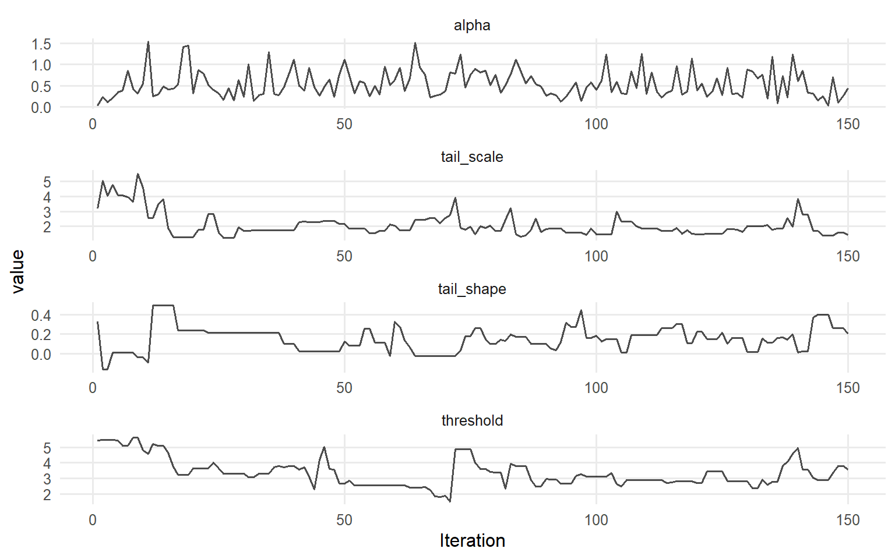
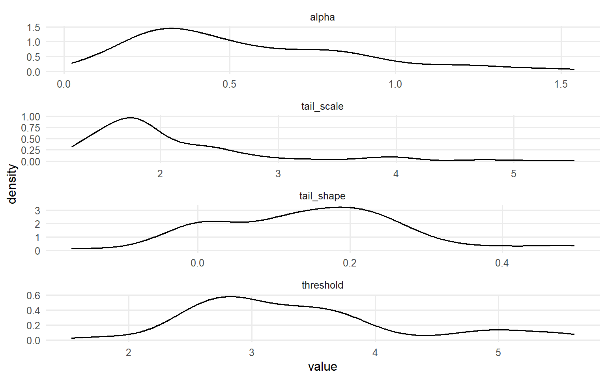
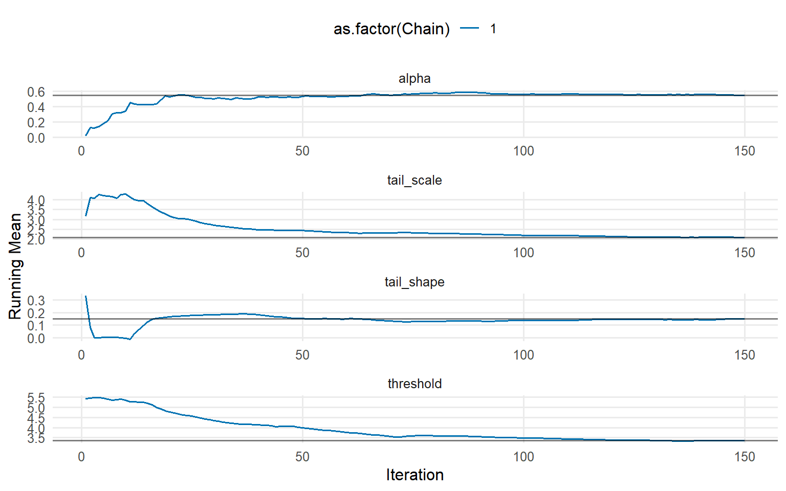
safe_plot(fit_gpd, params ="alpha", family =c("traceplot", "autocorrelation", "geweke"))
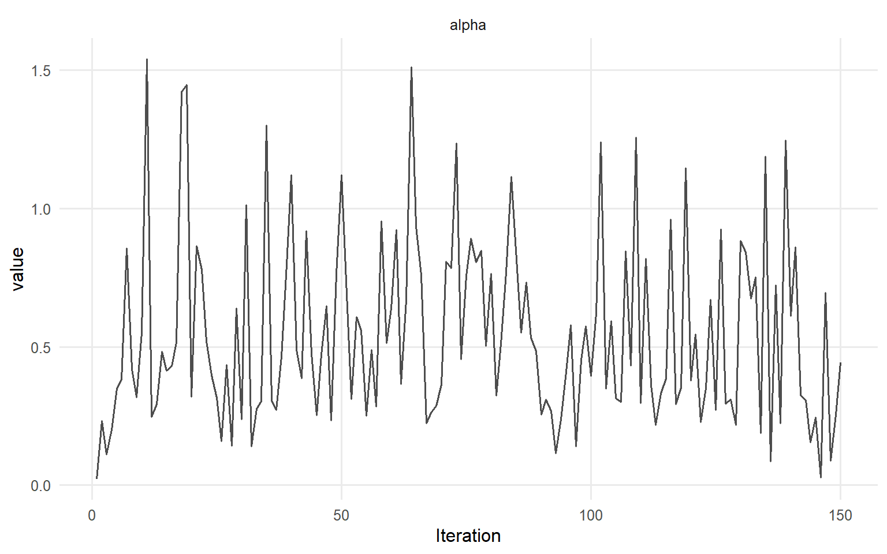
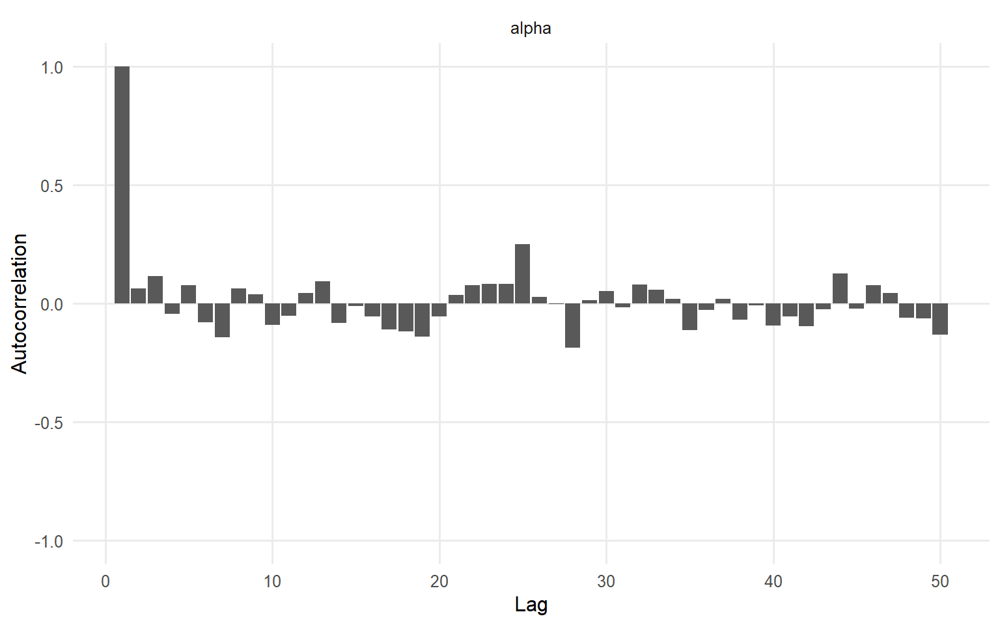
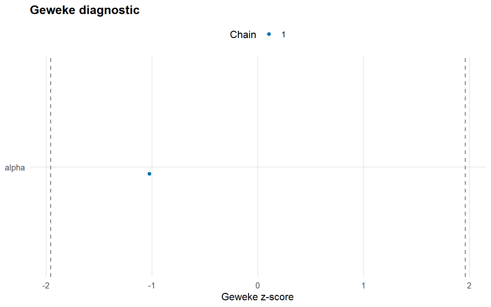
Posterior Predictions: Bulk and Tail
We use the S3 predict() objects and their dedicated plot() methods to visualize densities, survival curves, and posterior-mean quantiles (i.e., averages of q(p | \(\\theta\)) over draws).
y_min <-max(min(y_tail), .Machine$double.eps)y_grid <-seq(y_min, max(y_tail) *1.3, length.out =300)pred_density <-predict(fit_gpd, y = y_grid, type ="density")safe_plot(pred_density)
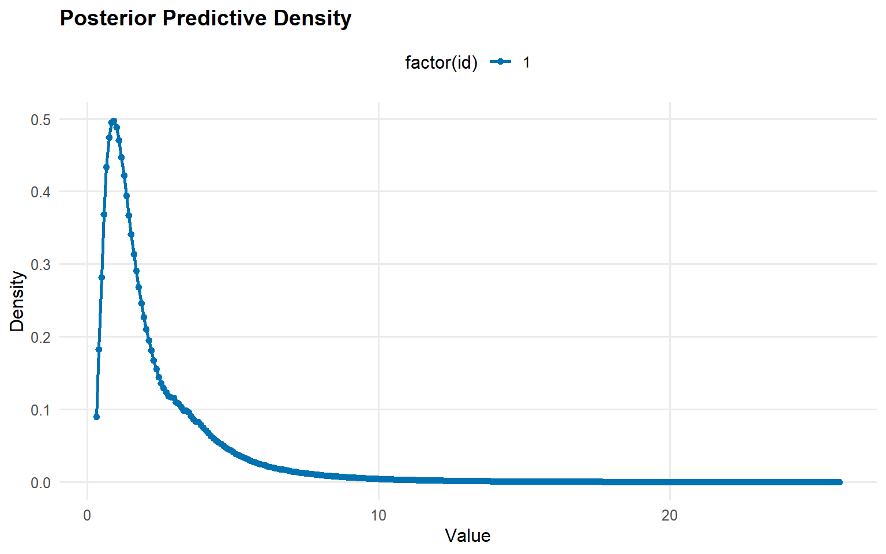
y_surv <-seq(max(u_threshold, y_min), max(y_tail) *1.1, length.out =60)pred_surv <-predict(fit_gpd, y = y_surv, type ="survival")safe_plot(pred_surv)
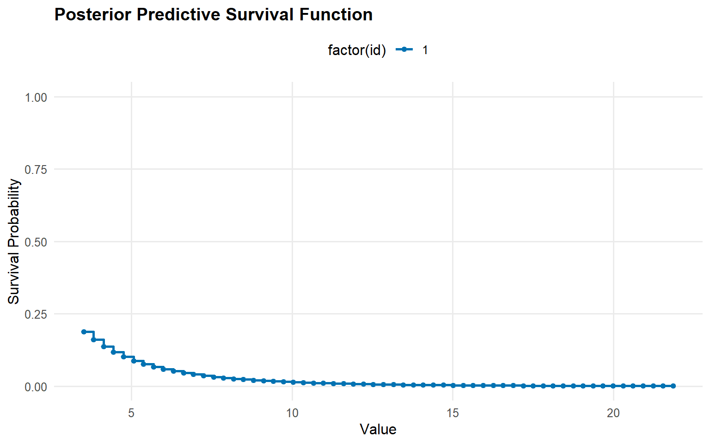
quantile_probs <-c(0.90, 0.95, 0.99)pred_quantiles <-predict(fit_gpd, type ="quantile", index = quantile_probs, interval ="credible")safe_plot(pred_quantiles)
Bulk-Only Baseline Comparison
To demonstrate the value of tail augmentation, we fit a bulk-only lognormal DP mixture and compare posterior summaries against the InvGauss+GPD fit.
[Warning] CRP_sampler: This MCMC is not for a proper model. The MCMC attempted to use more components than the number of cluster parameters. Please increase the number of cluster parameters.
bulk_quantiles <-predict(fit_bulk_only, type ="quantile", index = quantile_probs)tail_quantiles <-predict(fit_gpd, type ="quantile", index = quantile_probs)compare_tbl <-bind_rows( bulk_quantiles$fit %>%mutate(model ="Bulk only"), tail_quantiles$fit %>%mutate(model ="Bulk + GPD")) %>%select(any_of(c("model", "index", "estimate", "lwr", "upr", "lower", "upper")))compare_tbl %>%mutate(across(where(is.numeric), ~round(.x, 3))) %>%kable(caption ="Posterior-Mean Quantiles for Bulk-Only vs GPD Models", align ="c") %>%kable_styling(bootstrap_options =c("striped", "hover"), full_width =FALSE, position ="center")
Posterior-Mean Quantiles for Bulk-Only vs GPD Models
model
index
estimate
lower
upper
Bulk only
0.90
268.64
13.26
1.80e+03
Bulk only
0.95
1837.35
23.04
1.50e+04
Bulk only
0.99
87339.49
64.93
8.01e+05
Bulk + GPD
0.90
4.79
3.61
5.72e+00
Bulk + GPD
0.95
6.41
4.79
8.00e+00
Bulk + GPD
0.99
11.10
8.35
1.55e+01
safe_plot(bulk_quantiles)
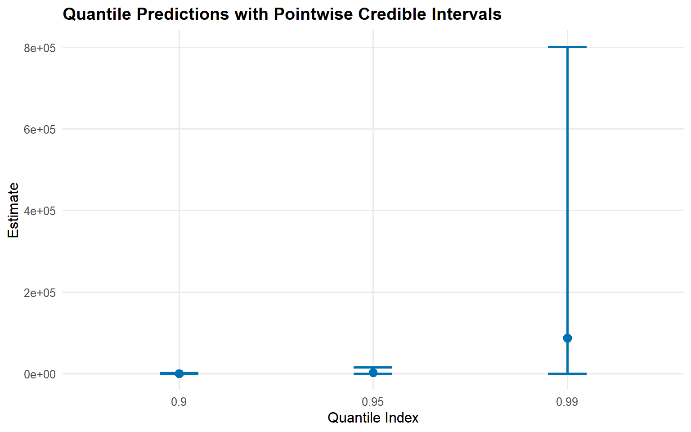
safe_plot(tail_quantiles)
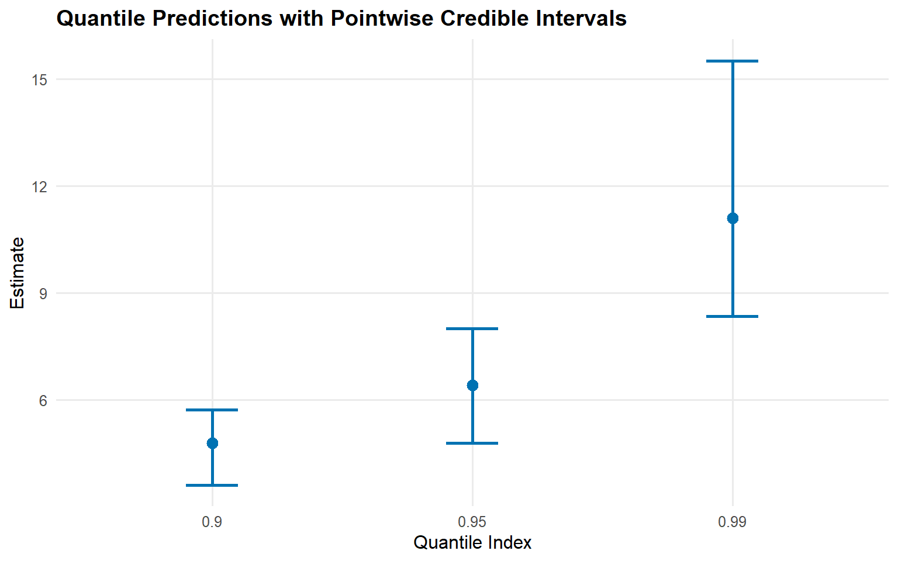
Extreme Value Diagnostics & Residuals
probs <-c(0.995, 0.99, 0.975)return_levels <-predict(fit_gpd, type ="quantile", index = probs)return_levels$fit %>%mutate(across(where(is.numeric), ~round(.x, 3))) %>%kable(caption ="Extreme Quantile Estimates (Posterior Mean and Credible Intervals)", align ="c") %>%kable_styling(bootstrap_options =c("striped", "hover"), full_width =FALSE, position ="center")
Extreme Quantile Estimates (Posterior Mean and Credible Intervals)
estimate
index
lower
upper
13.58
0.995
10.09
20.4
11.10
0.990
8.35
15.5
8.27
0.975
6.36
11.1
For unconditional models, use predict() only; fitted() and residuals() are not supported.
Threshold Sensitivity
sensitivity_fits <-lapply(thresholds, function(u) { bundle <- DPmixGPD::build_nimble_bundle(y = y_tail,kernel ="invgauss",backend ="crp",GPD =TRUE,param_specs =list(gpd =list(threshold =list(mode ="fixed", value = u) ) ),components =5,mcmc = mcmc ) fit <-load_or_fit("ex03-unconditional-dpmgpd-crp-fit", run_mcmc_bundle_manual(bundle))list(threshold = u, fit = fit)})
[Warning] CRP_sampler: This MCMC is not for a proper model. The MCMC attempted to use more components than the number of cluster parameters. Please increase the number of cluster parameters.
sensitivity_tbl <-bind_rows(lapply(sensitivity_fits, function(entry) { quant <-predict(entry$fit, type ="quantile", index =0.99, interval ="credible") qfit <-as.data.frame(quant$fit) qfit$threshold <- entry$threshold# Keep the usual columns if present keep <-intersect(names(qfit), c("threshold", "index", "estimate", "lower", "upper", "lwr", "upr")) qfit <- qfit[, keep, drop =FALSE]# Standardize to one set of CI column namesif (!"lower"%in%names(qfit) &&"lwr"%in%names(qfit)) qfit$lower <- qfit$lwrif (!"upper"%in%names(qfit) &&"upr"%in%names(qfit)) qfit$upper <- qfit$upr# If estimate isn't present for some reason, fall back to the first numeric columnif (!"estimate"%in%names(qfit)) { num_cols <-names(qfit)[vapply(qfit, is.numeric, logical(1))]if (length(num_cols) >0) qfit$estimate <- qfit[[num_cols[1]]] } out <-data.frame(threshold = qfit$threshold[1],q_99 = qfit$estimate[1],q_99_lwr =if ("lower"%in%names(qfit)) qfit$lower[1] elseNA_real_,q_99_upr =if ("upper"%in%names(qfit)) qfit$upper[1] elseNA_real_ ) tibble::as_tibble(out)}))sensitivity_tbl %>%mutate(across(where(is.numeric), ~round(.x, 3))) %>%kable(caption ="Threshold Sensitivity: 99th Quantile", align ="c") %>%kable_styling(bootstrap_options =c("striped", "hover"), full_width =FALSE, position ="center")
Threshold Sensitivity: 99th Quantile
threshold
q_99
q_99_lwr
q_99_upr
2.65
11.6
9.37
15.4
3.04
11.6
9.37
15.4
3.51
11.6
9.37
15.4
3.94
11.6
9.37
15.4
4.60
11.6
9.37
15.4
Key Takeaways
Bulk + Tail: DPmix explains the bulk, and GPD captures the extremes.
Threshold: 0.8 quantile is our running default, but sensitivity checks guide the choice.
S3 workflows: predict() and its plot() method make it easy to compare density, survival, and quantiles.
Comparison: Bulk-only fits under-estimate extreme quantiles without a GPD component.
Next: Explore Stick-Breaking (ex04) for another backend with tail augmentation.